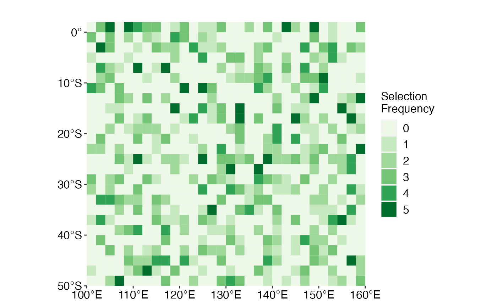

When multiple spatial plans are generated, we are often interested in how many times a planning unit is selected across an array of solutions. This array can either be a list of the solutions of different conservation problems or generated through a portfolio approach with prioritizr.
splnr_get_selFreq() allows you to calculate the selection frequency of each planning unit of either a list or a portfolio of solutions. The resulting sf object can be passed for visualization to the spatialplanr function splnr_plot_selectionFreq().
Examples
dat_problem <- prioritizr::problem(dat_species_bin %>% dplyr::mutate(Cost = runif(n = dim(.)[[1]])),
features = c("Spp1", "Spp2", "Spp3", "Spp4", "Spp5"),
cost_column = "Cost"
) %>%
prioritizr::add_min_set_objective() %>%
prioritizr::add_relative_targets(0.3) %>%
prioritizr::add_binary_decisions() %>%
prioritizr::add_default_solver(verbose = FALSE)
dat_soln <- dat_problem %>%
prioritizr::solve.ConservationProblem()
# create conservation problem that contains a portfolio of solutions
dat_soln_portfolio <- dat_problem %>%
prioritizr::add_cuts_portfolio(number_solutions = 5) %>%
prioritizr::solve.ConservationProblem()
selFreq <- splnr_get_selFreq(solnMany = dat_soln_portfolio, type = "portfolio")
(splnr_plot_selectionFreq(selFreq))
